Together we are the
co-founders of
Maptime.
What is Maptime?
Maptime is a community of local chapters formed around beginner-oriented teaching and learning about open source geospatial technology.
Maptime is meant to be accessible and is explicitly beginner-focused.
Let's unpack this.
1. Community of local chapters
Currently Maptime has sixty chapters!
Considering that Maptime is just barely two years old, this is kind of nuts.
2. Beginner-oriented teaching and learning
Maptime is by beginners, for beginners
Started literally as time to make maps...
... and grew into a huge learning community.
How? Why?
Bold statements:
We are all beginners.
We are all teachers.
There are things we know and don't know.
There are things to learn and things to share.
We'll talk more about this.
3. Open source geospatial technology
We prefer teaching with open source tools because they are accessible.
(They don't cost money.)
But of course open source has its challenges...
We'll talk more about this, too.
4. Accessibility
This means a few things.
Empowerment
Hard work to breed conceptual understanding
Open to folks of all backgrounds and skillsets
Creating resources, forking resources, building tools around our communities.
We each do this because we love it and care about it...
... but we all have different ideas about the future of geographic education.
This is our strength.
This is why we decided to build our community around open source.
Open Source is amazing! (except when it's not)
Tools and data are there for you to use! For free!
You can see how it works! You can fix it!
But unfortunately...
Open Source is also awful!*
(*sometimes)
Made by technologists for technologists
A community culture that is:
unwelcoming
competitive
snobby
generally obnoxious
Writing and learning Open Source takes a lot of privilege.
It's a utopia! ...but mainly for white dudes
Maptime is fighting for the soul of open source.
OpenStreetMap: case in point
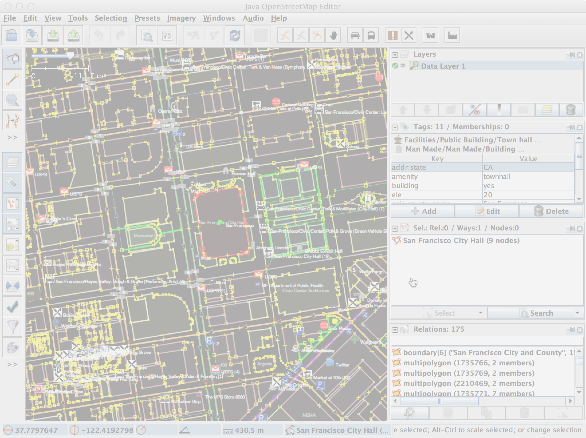It can be complicated
It can be unfriendly
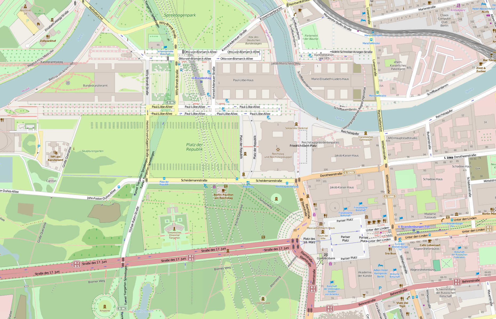Detail and quality: amazing!
Berlin
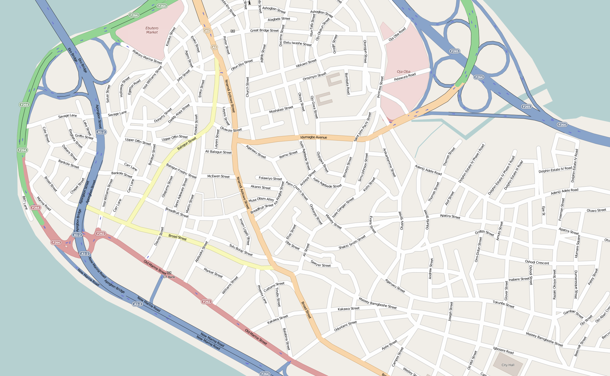...but not everywhere. :(
Lagos
Imbalances here at home
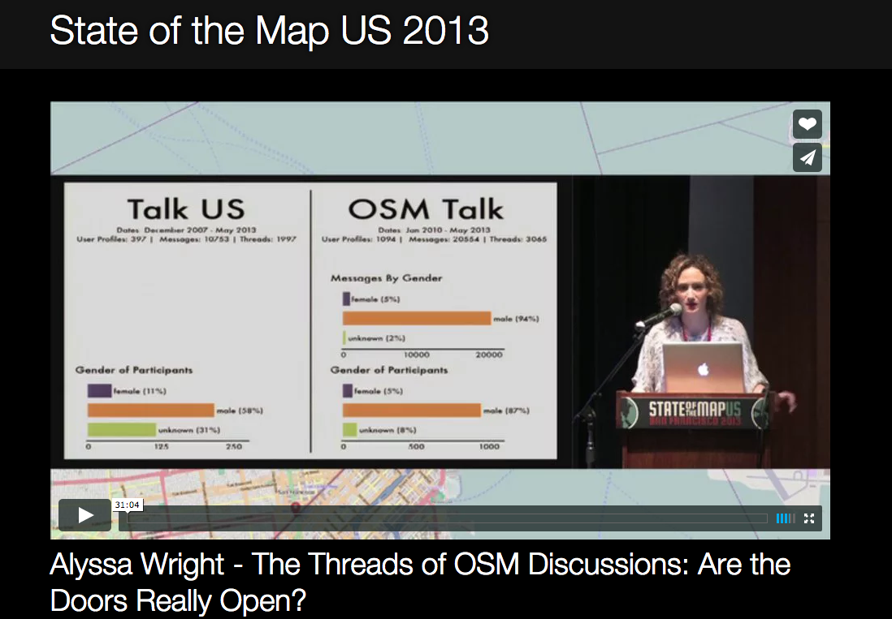
In the US, the GIS workforce is 46% female. Worldwide it's 37%.
OSM: 3% female
Open Source: 1%
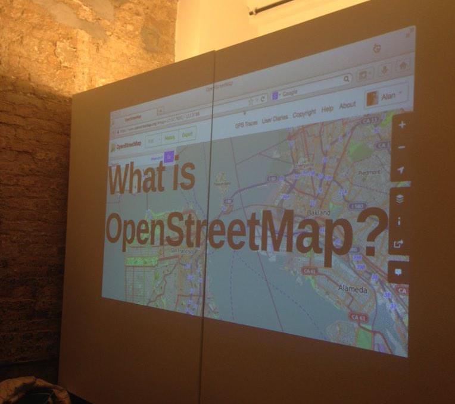OSM 101
@MaptimePR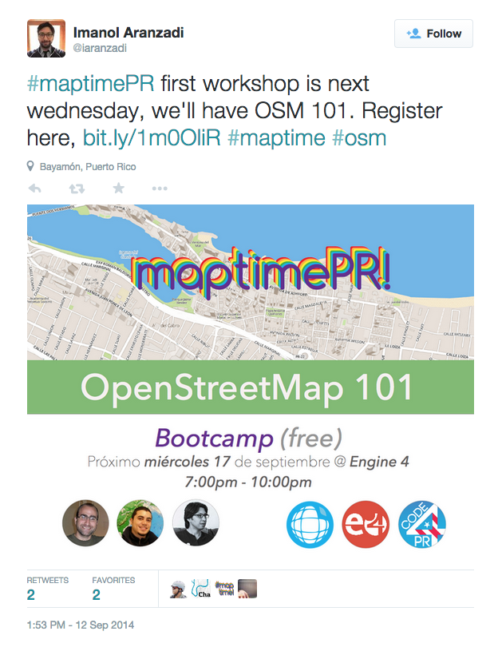
@MaptimeOSL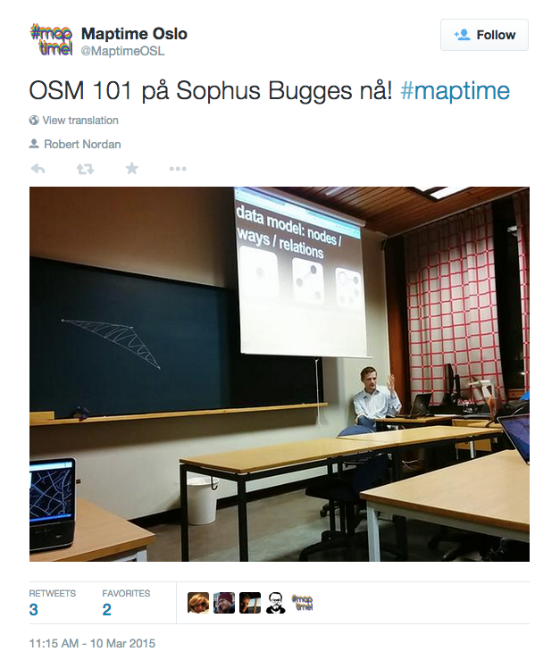
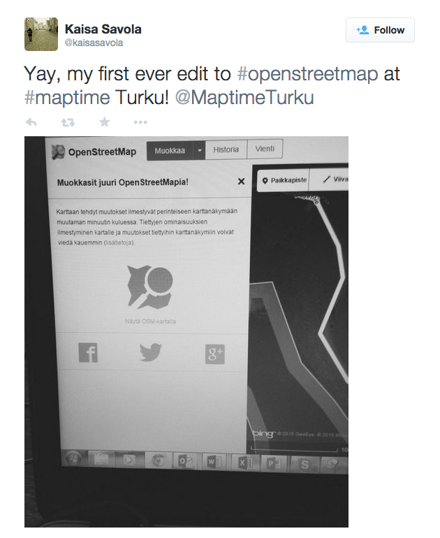
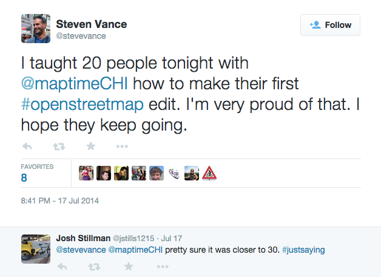
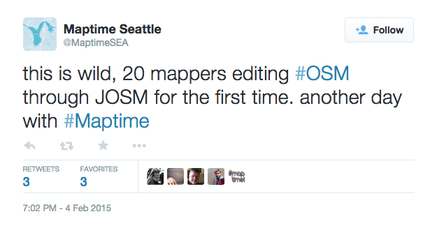
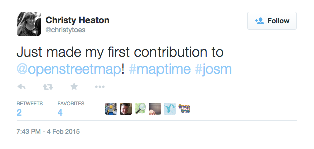
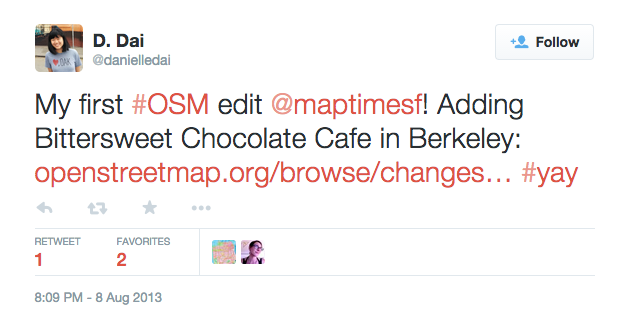
Diversity is central to Maptime's mission.
It's not just a task for the underrepresented. It's a task for everybody.
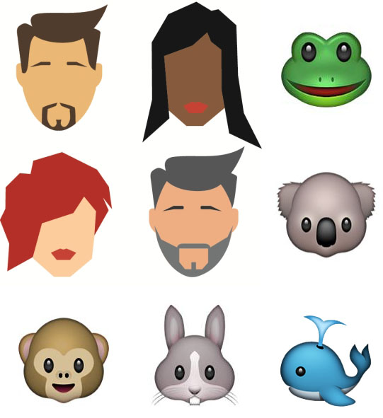Maps made by everyone
But what does that mean as an organizer?
Organize like a beginner
Some truths...
1. Beginners make excellent teachers
2. On ramps to open source are steep
3. It’s easy to focus on a tool, rather than a concept
1. How do experts approach concepts and content with a beginners mind?
2. How do we level out the on ramps to open source?
3. How do we promote problem solvers rather than software users?
Beginner's mind (初心)
Basically, that’s small ego, big empathy, high enthusiasm.
what happens when you're no longer a beginner? organizer burnout
1. Keep the beginners coming
2. Share organizing
3. If it’s not fun anymore, stop.
level the ramps
How?
1. Keep it simple
Maptime is just a sketch of platform built with local materials
2. Use the same tools and processes as major source projects like Node.js, Mapnik, and Leaflet.js
Hosted on Github
3. Engender ownership
Decentralized
How do we promote problem solvers rather than software users?
1. Make no mandates (with one exception)
2. Seek diversity
3. Don't sell anything
be a beginner
Amid this success, something else has become crystal clear.
There is no road map to becoming a geo expert.
A definition:
Geo expert = Open Source + Esri + cartographic concepts.
Irony
We are makers of maps!
Maptime is an excellent on ramp into the world of maps.
We've made this technology easier to grasp.
But where do people go once they get on the highway?
Some people, before they know it, have gone from beginner to teacher.
amazing!
But
Learning any craft takes time, practice, focus, and independent study.
Some students need more guidance.
Some students need more structure.
That's ok.
People come to Maptime as adults.
Being an adult is great!
But our brains have lost neuroplasticity.
Learning new things just takes more time than it did when we were younger.
Still, picking up new technology can be daunting.
It's also hard to really devote time to learning a new skill in your off hours.
It can also be hard for a group of volunteers to offer even more time to help.
I would love to see a more sustainable solution to in-depth OS GIS education.
What if some of our volunteer teachers got paid?
What if OS geo tools were integrated into GIS certifications?
What if you could learn spatial analysis through QGIS and ArcGIS?
What if coding and design principles were taught alongside cartographic ones?
What if there was a code school focused on OS Geo?
These are, admittedly, big questions.
I bet I'm not the only one asking them.
When I think about the future of geo education, and the path to get there, these are the ones I'm asking.
They are ones that make me think about the current education revolution.
They make me think about the future of academia.
#daunting
Managing Maptime is like moving pebbles.
Changing academia is like moving a boulder.
Pebbles come with their own challenges, but boulders are tough.
Maptime is for all of us.
Think about the last time you talked to a coworker, explaining to her what you do and how you do it.
Think about giving a cartography review.
Think about someone you met this week – did you tell them what you do? You probably taught them something new.
Something they didn’t know before.
Thats teaching.
We are all teachers.
And we are all building implicit learning communties all the time -- at home, in our offices, on the train during our evening commute
verbally, nonverbally, intentionally and unintentionally.
Maptime is just a formalization of these implicit communities.
It’s not education by happenstance, but by intention.
It’s the realization that we’re all teaching and learning all the time, and we can hone those experiences to meet our goals. That’s the nutshell.
This is why we need you.
Think about your GIS learning experience. Was it hard?
It definitely was for me.
GIS is the marriage of something totally technical with something totally creative.
It's geometry and design and databases and statistics and user experience and psychology.
Maps are ancient and complex.
That knowledge is so valuable to folks just getting started with mapping.
Maptime suceeds because of a diversity of skillls, a diversity of strengths, and a departure from ego.
This community is built by its members.
Every chapter changes the game.
Every new member provides new insights.
Every individual perspective changes the perspective of the whole.
Geospatial expertise is so valuable, especially for mapping newcomers.
If you think you shouldn’t go to Maptime because you can’t code, you are mistaken!
If you think you shouldn’t start a chapter because you aren’t an expert, you’re in the wrong!
There's a geo beginner at Maptime waiting to learn and teach with you.
Teaching and learning.
That's what Maptime is for.
Let's talk, and see how we can help each other, together.
Thank you!